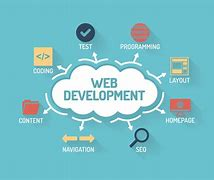
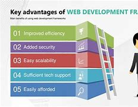

Hello! My name is Muhammad Ali Sultan. I'm currently studying Computer Science at Quaid-i-Azam University Islamabad. I have a deep passion for technology and love building software solutions that improve lives.
In addition to my academic studies, I have practical experience in the following programming languages:
HTML
CSS
JavaScript
C++
Kotlin
Python
Java
Here’s a picture of me! Attending Dev Jirga at Quaid-i-Azam University

Now lets get through web development. I will tell the advantages and disadvantages on web development. So lets go.
Things I Like About Web Development

I am passionate about web development because of the tremendous impact it has on people and businesses. Here are some things I truly enjoy:
Enhanced Brand Identity
Websites are the digital storefront for any business. A well-designed website can enhance brand visibility, create a unique online presence, and leave a lasting impression on visitors.
Increased Reach and Visibility
A website allows you to reach a global audience. Whether you’re a small business or an individual, having an online presence makes it easy for others to find you and learn more about what you do.
Access to Information
The internet has democratized information. With a few clicks, people can access an enormous amount of data, which can change lives and improve access to knowledge.
Better Customer Engagement
Websites can be used to engage with customers directly. Through forms, feedback systems, and interactive elements, businesses can understand their audience better and cater to their needs.
Customer Data and Insights
Web development allows for the collection of valuable customer data through analytics. This can help businesses improve their products and services to meet customer needs better.
Some of my favorite websites that I frequently visit include:
While web development is an exciting field, there are a few challenges that come with it. Here are some of the downsides I have encountered:
Responsive Design Issues
Websites that aren’t optimized for mobile devices can be frustrating for users. It’s essential to ensure that the website looks and works great on all screen sizes.
Internet Connection is Required
Unlike desktop software, websites rely heavily on an internet connection to function. This can be limiting when the user doesn't have access to the internet or has a poor connection.
Security Concerns
Websites are vulnerable to hacking and cyber-attacks. Ensuring that your website is secure and protects user data is always a top priority for web developers.
Limited Functionality
Some websites have limited functionality compared to native desktop applications. For example, a website might not be able to perform certain tasks without external tools or plugins.
Compatibility Issues
Different browsers and devices render websites in slightly different ways, leading to potential compatibility issues. This means developers have to test and optimize for multiple platforms.